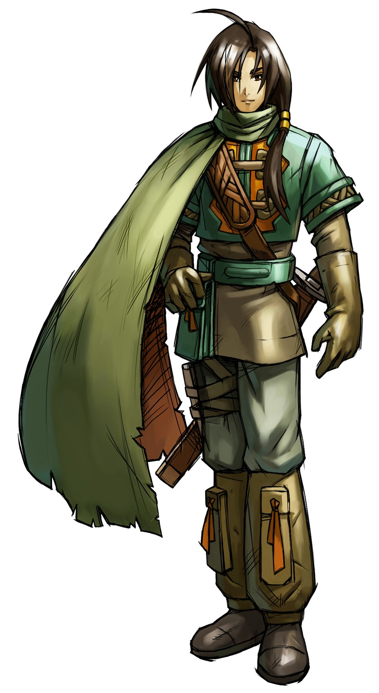
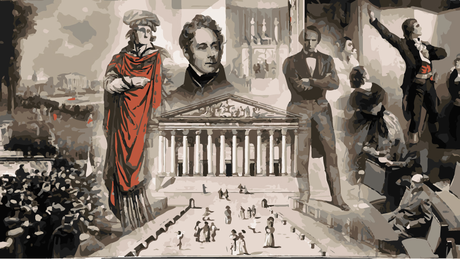
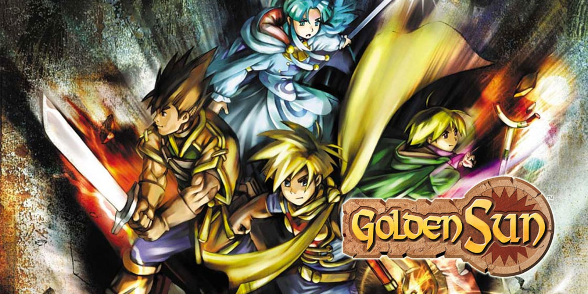

Ambroise Pietu

Nom/Prenom : Ambroise Pietu
Ages : 23 ans
Date de naissance : 02/05/1999
Ville : Nogent-Sur-Marne
Taille : 1m72
Axe actuel : A2 Coding
Interets : Echec, Histoire, Jeux Video
Il trouve que c'est un jeu intéressant avec toute l'histoire qui l'entoure. On a des théorèmes de mathématiques qui ont été découvert grâce à ce jeu et beaucoup d'avancées en programmation ou encore en fabrication d'automates y sont directement liés.
Il s'intéresse à pas mal de périodes de l'histoire parce qu'il trouve que ça aide à découvrir de nouvelles façons de penser et d'autres cultures. Cela permet aussi de comprendre différents pays et leur fonctionnement aujourd'hui. Il aime bien les mythes et légendes donc il s'intéresse plus à des civilisations dont les mythes ont un impact culturel encore aujourd'hui par exemple les sumériens avec Gilgamesh.

